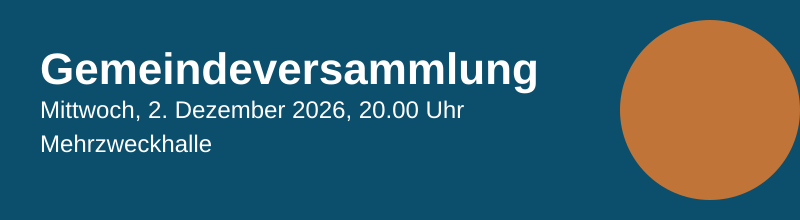

Einladung
Die Stimmberechtigten werden zur ordentlichen Gemeindeversammlung eingeladen. Traktanden: Budget 2027, Kreditantrag Sanierung Schulhausdach, Verschiedenes.
Die Unterlagen liegen ab 16. November auf der Gemeindekanzlei auf.

Die Stimmberechtigten werden zur ordentlichen Gemeindeversammlung eingeladen. Traktanden: Budget 2027, Kreditantrag Sanierung Schulhausdach, Verschiedenes.
Die Unterlagen liegen ab 16. November auf der Gemeindekanzlei auf.